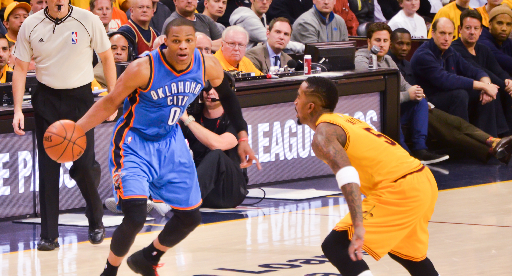

Russell Westbrook's record-breaking triple-double was the most efficient in the history of NBA
By
image courtesy of Wikimedia Commons
On April 9, 2017, Oklahoma City point guard Russell Westbrook made history.
In one remarkable performance, the MVP front-runner both sealed a win for his team on a buzzer-beating 3-pointer in a 106-105 win over the Denver Nuggets, while also surpassing Oscar Robertson for the most triple-doubles in one season in NBA history with his 42nd of the year.
Furthermore, Westbrook’s night of 50 points, 16 rebounds and 10 assists in 37 minutes cemented his legacy as the first player to average a triple-double for an entire season since Robertson did so in 1962-1963. He finished 2016-2017 with a stat line of 31.6 points, 10.4 assists and 10.7 rebounds per game.
But despite all those accomplishments, his most impressive feat that night came after some further data analysis.
With the MVP race between Westbrook and James Harden so hotly contested this season, and the increase in debate regarding the value of a triple-double, we sought out to A. compare and contrast the triple-doubles that were accomplished this season by Harden and Westbrook and B. run those triple-doubles through a database which stacked them up against every triple-double that has been recorded in history (or since 1983, except for a few beforehand. We also acquired enough data for 42 of Robertson’s record 181 total triple-doubles, as extended data and statistics before this time period is unavailable.)
To accomplish this, we decided to solve for a growing metric in the NBA--efficiency.
Using a formula that we developed based on Memphis Grizzlies Vice President of Basketball Operations John Hollinger’s innovative GameScore statistic, we created the triple-double Rating, or TDR.
In solving for TDR, we concluded that Westbrook’s triple-double recorded against the Nuggets on April 9, was the most efficient in NBA history, among triple-doubles that have been recorded with the necessary and proper data to account for TDR.
Westbrook’s TDR of 123.24 topped runner-up Lafayette “Fat” Lever’s TDR of 120.71 as the most efficient ever.
THE RESULTS
Westbrook’s historic night, which earned the highest TDR, and thus the most efficient triple-double that was calculable, came heavily on the offensive end.
His oTDR from that game was an impressive 110.27, while his defensive TDR came in at 12.97. Obviously offensive statistics weigh much heavier numerically in the game of basketball, so comparing oTDR vs. dTDR side-by-side is simply unrealistic.
However, we are able to assess oTDR and dTDR amongst themselves to analyze efficiency on that specific end of the floor.
Not surprisingly, Westbrook’s record-breaking night which earned him the highest TDR of all time (123.24) was also the highest oTDR. His dTDR was 474th. His best dTDR of all time, which he accomplished on March 04, 2014, ranks 66th.
Obviously, Westbrook is no stranger to the feat of earning a triple-double. His consistent efficiency within those triple-doubles however is what is most impressive.
Of the top ten TDR’s, Westbrook owns three of the top spots, finishing first, sixth, and tenth. The same argument of consistent efficiency within triple-doubles can also be made for Harden, who owns the third and fifth best TDRs.
An interesting takeaway from measuring for TDR is that nine of the 10 ten came from guards or forwards, and only two of those were forwards. Hall of Fame center David Robinson of the San Antonio Spurs is the only non-guard/forward in the top ten.
Also of note, on Dec. 3, 2004, beloved Los Angeles Lakers guard Kobe Bryant registered the lowest TDR (11.83). He scored 10 points, had 10 assists and added 12 rebounds to tally the triple-double, but shot 3-for-12 from the field, 4-for-7 from the line and committed eight turnovers.
While offense has increasingly dominated the NBA, it’s also worth analyzing the incredible efforts of defensive-based TDR’s.
Shaquille O’Neal’s jaw-dropping defensive stat line of 18 defensive rebounds, 15 blocks and one steal on Nov. 20, 1993 gave him the best DTDR.
The second best dTDR came from Golden State Warriors forward Draymond Green this past February. The All-Star earned a triple-double in impressive fashion by totaling 10 assists, 10 steals and 11 rebounds. It is the only triple-double ever recorded without points as one of the three statistics. He finished with four points in the game.
Green’s triple-double this past season also sheds some light on the way basketball is being played. The top-20 dTDR is littered with players from the 80s and 90s, Green being only one of five players to achieve an elite dTDR since 2000.
By comparison, when considering the elite oTDRs recorded, guards and forwards playing in the 21st century appear frequently, another indication of the fast-paced, gun-slinging nature of the modern NBA.
THE DEBATE
The MVP debate for the 2016-2017 NBA season will be a topic of discussion for many months, if not years to come. Many are pegging Westbrook as the obvious choice, but history is not on his side. Robertson’s triple-double season led to a third-place finish in MVP voting, behind fellow Hall of Famers Bill Russell and Wilt Chamberlain.
This year’s MVP cast possess similar attributes. James Harden led his team to a 55-win season, while also recording 22 triple-doubles. Kawhi Leonard arguably solidified his position as the best two-way player in the league. And not to forget the efforts from future Hall of Famer LeBron James, who almost became the first forward ever to average nine assists in one season. But even after all that, Westbrook’s case is by far the strongest.
His triple-double average is astounding. To achieve this feat, Westbrook collected 42 triple-doubles, none more impressive than the record-setting performance.
During a time when fans, media and players are steadily trying to figure out who the MVP is, Westbrook made a clear and loud statement on April 9, posting 50 points, 16 assists, and 10 rebounds, while going perfect from the charity stripe (11-for-11) and shooting 53 percent from the field. And not to mention a ridiculous 30-foot buzzer beating 3-pointer that ended Denver’s playoff hopes. Talk about doing it in style.
Not to be outdone, Harden made sure to leave some doubt in voters’ minds by posting a triple-double in his final game of the season, bringing his total to 22 for the year. In doing so, The Bearded One led the Rockets to a total of 55 wins this season, eight more than the Thunder’s 47 wins. When it came to winning, Harden outdueled his former teammate this year, something that is quite a feat considering the lack of star power surrounding Harden.
A head-to-head comparison of TDR between these two rivals reveals that both are quite efficient in games where they posted a triple-double. Their efficiency is more limited by a single stat: turnovers, something both guards can struggle with sometimes. Otherwise, when the two protect the ball and limit the number of turnovers, their TDR are some of the greatest of all time.
The same argument can be made for Westbrook as well. Looking at Westbrook’s supporting cast, it is clear that his team not only lacks any type of star player, but is essentially a collection of average starters and role players. The goal for both Harden and Westbrook was to make their teammates better, something both players were able to do. The result: a first-round matchup between the two MVP candidates. Since so many people are having a tough time figuring out who was the more valuable player, a seven-game series between the two should settle the score… right?
In the end, the result of this debate will tell us much more about the players, media and fans than it will about Harden or Westbrook.
What is more important? Wins or individual statistics. Ironically, this being Kobe Bryant’s first year out of the league, basketball fans everywhere are about to find out just how important shooting efficiency really is. Weirdly enough, the MVP of this NBA season will be a reflection on the way basketball is perceived and not the greatness of the players being discussed. Barring some unforeseeable injuries or fall from grace, both Westbrook and Harden will both be enshrined in the Naismith Basketball Hall of Fame. But who will collect more MVP trophies remains to be seen.
THE METHODOLOGY
Hollinger’s GameScore is an innovative tool to measure how well a player performed in a single game. It takes into account multiple state lines and through a formula assesses a score. We used this formula as a vital baseline for TDR, but ultimately decided to add one element to solve for efficiency.
Hollinger’s GameScore formula is as follows: (PTS x 1.0) + (FGM x 0.4) + (FGA x -0.7) + ((FTA-FTM) x -0.4) + (ORB x 0.7) + (DRB x 0.3) + (STL x 1.0) + (AST x 0.7) + (BLK x 0.7) + (PF x -0.4) + (TO x -1.0).
So, for instance Westbrook’s historic night against the Nuggets last Sunday, the point guard earned an impressive GameScore of 45.60.
To definitively equate efficiency, we felt adding minutes played into the formula would better solve for this variable.
Thus, we created the TDR formula which is as follows: ( ( (PTS x 1.0) + (FGM x 0.4) + (FGA x -0.7) + ((FTA-FTM) x -0.4) + (ORB x 0.7) + (DRB x 0.3) + (STL x 1.0) + (AST x 0.7) + (BLK x 0.7) + (PF x -0.4) + (TO x -1.0) )/MP ) x 100.
Though TDR gives one numerical rating, it can also be broken into two different parts that make up one bigger formula. While solving for each TDR, we wanted to further explore triple-doubles, and specifically what end of the floor they were decisively earned at-- offensive or defensive.
To do so, we developed Offensive TDR, or OTDR, and Defensive TDR, or DTDR. Those two scores combined earn the final TDR, but when they stand on their own, can give analysis to performances at one single end of the court.
To solve for oTDR, we calculated: ( (PTS, FG, FGA, FT, FTA, ORB, AST, TOV)/MP) ) x 100, using the same metrics from GameScore.
To solve for dTDR, we calculated: ( (DRB, BLK, STL, PF)/MP ) x 100, also using the original metrics from GameScore.
With TDR, oDTR, and dTDR, we calculated the most efficient triple-double of all time, the most efficient offensive-produced triple-double and the most efficient defensive-produced triple-double of all time. Again, these are the most efficient of all time among those whom have the necessary data.